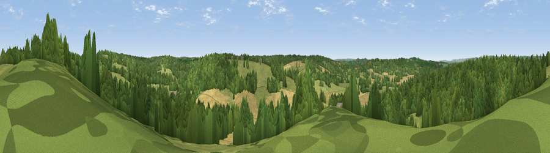

Viewpoint near Speldhurst
#27766 in England · top 28% of its area beats it · near SpeldhurstThe view, rendered

A 360° render of this exact spot computed from the terrain model, tree cover and land cover — summer colours, afternoon light, calibrated against photographs of famous viewpoints. Real trees, hedges and buildings will differ in detail.
The panorama
Grey silhouette: terrain skyline in each direction (720 bearings, Earth curvature and refraction included). Dashed green: skyline with trees (+15 m) and buildings (+8 m) as obstacles. Blue strip: how far the ground is visible on each bearing.
Where the view opens
Wedge length = distance to the farthest visible ground on that bearing (vegetation-aware). Rings at 10, 25 and 50 km.
What fills the view
48% woodland · 35% grassland · 17% cropland ·
Angular shares of the visible panorama (visual magnitude), not map area. Landscape diversity 0.46 (0–1 Shannon).
Key numbers
More beautiful places nearby
The staircase of upgrades: each row has a higher view potential than everything closer. Driving times are estimates from straight-line distance, calibrated against real road routing — check an actual route before setting out.
| Place | Direction | Drive | Score |
|---|---|---|---|
| Viewpoint near Bidborough | ENE · 2 km | ~6 min | 52.8 |
| Viewpoint near Bidborough | ENE · 3 km | ~8 min | 57.2 |
| Viewpoint near Sevenoaks Weald | NNW · 10 km | ~19 min | 62.3 |
| Viewpoint near Sevenoaks Weald | N · 10 km | ~19 min | 64.9 |
| Viewpoint near Ide Hill | NNW · 10 km | ~19 min | 65.1 |
| Viewpoint near Ide Hill | NNW · 10 km | ~20 min | 67.9 |
| Viewpoint near Shipbourne | NNE · 11 km | ~21 min | 69.1 |
| Malling Hill | SSW · 34 km | ~51 min | 73.8 |
51.16251, 0.20570 · source: screening · position refined by local search. Computed location — check access rights before visiting.